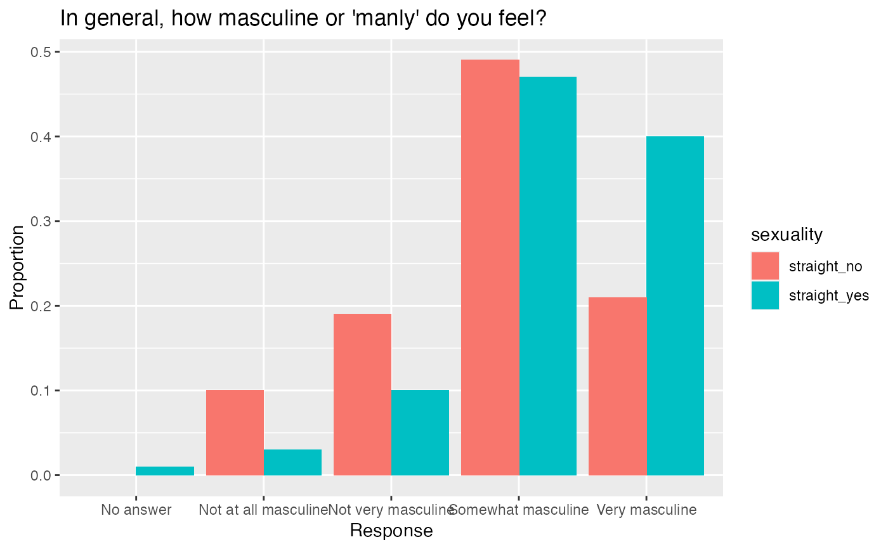

This folder contains the data behind the story: "What Do Men Think It Means To Be A Man?" https://fivethirtyeight.com/features/what-do-men-think-it-means-to-be-a-man
masculinity_survey
A dataset with 189 rows representing answers and 12 variables:
the survey question
the survey response
the ratio of overall participants who selected this response
the ratio of participants age 18 to 34 who selected this response
the ratio of participants age 35 to 64 who selected this response
the ratio of participants age 65 or over who selected this response
the ratio of overall white participants who selected this response
the ratio of overall non-white participants who selected this response
the ratio of participants who have child(ren) who selected this response
the ratio of participants who do not have children who selected this response
the ratio of straight participants who selected this response
the ratio of non-straight participants who selected this response
The original survey responses and original datasets can be found here: https://github.com/fivethirtyeight/data/tree/master/masculinity-survey
The original `masculinity-survey.csv` contains the results of a survey of 1,615 adult men conducted by SurveyMonkey in partnership with FiveThirtyEight and WNYC Studios from May 10-22, 2018. The modeled error estimate for this survey is plus or minus 2.5 percentage points. The percentages have been weighted for age, race, education, and geography using the Census Bureau’s American Community Survey to reflect the demographic composition of the United States age 18 and over. Crosstabs with less than 100 respondents have been left blank because responses would not be statistically significant. I made heavy editions in Excel to make the dataset easily usable in R.
library(dplyr) library(ggplot2) library(tidyr) library(stringr) # Data wrangling masculinity_tidy <- masculinity_survey %>% # Narrow down rows to those pertaining to first question of survey: filter(question == 'In general, how masculine or "manly" do you feel?') %>% # Eliminate columns not relating to sexual orientaiton: select(-c(age_18_34, age_35_64, age_65_over, white_yes, white_no, children_yes, children_no, overall)) %>% # Convert data frame to tidy data (long) format: gather(key = sexuality, value = ratio_by_sexuality, -c(question, response) ) # Visualize results ggplot(data = masculinity_tidy, aes(x = response, y = ratio_by_sexuality, fill = sexuality)) + geom_bar(stat="identity", position = 'dodge') + labs(x = "Response", y = "Proportion", labs = "Sexuality", title = "In general, how masculine or 'manly' do you feel?")